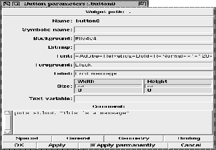

This procedure activates the small parameter setting dialog for the currently selected widget, or the widget that was passed on as first parameter. This dialog is usually the most important dialog, and contains the most important resources that can be changed for a widget. If a resource is not accessible with this dialog, the general parameter dialog must be used.

Figure: The procedure XFProcConfParametersSmall